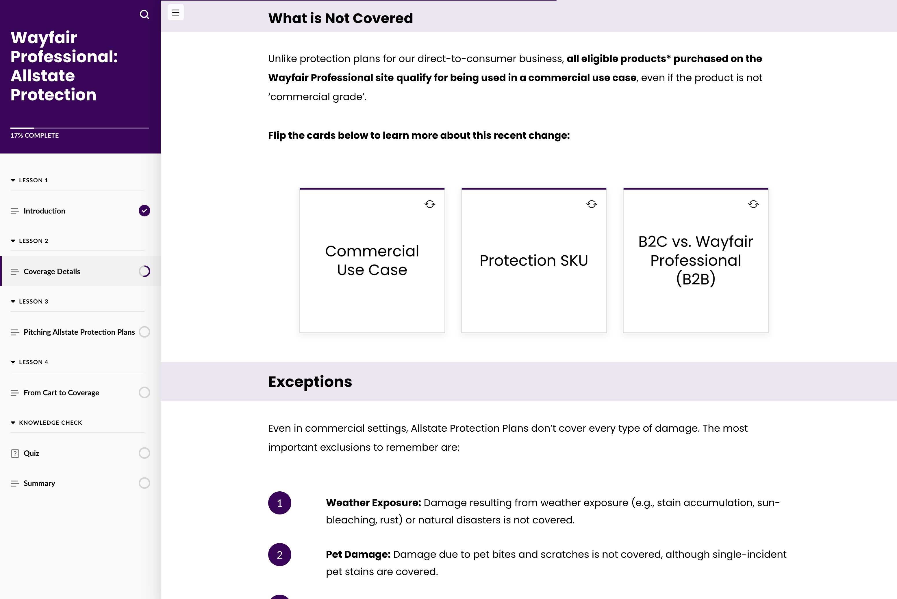
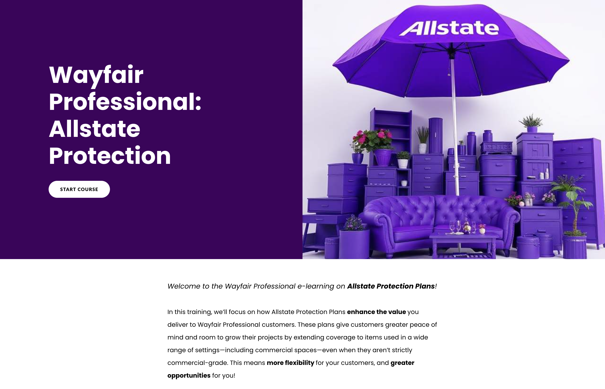
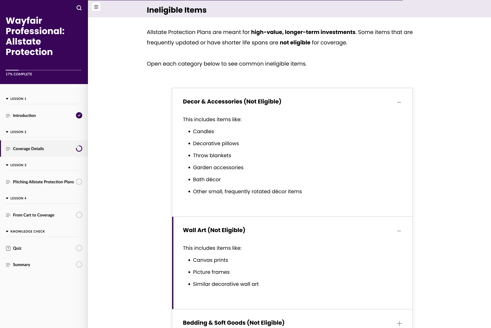
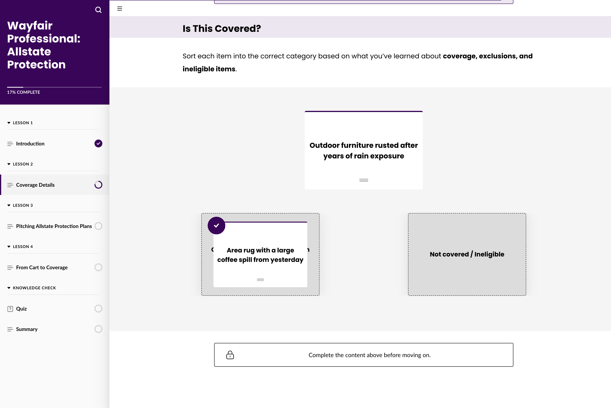

01 / Instructional design · E-learning
Protection-plan details, ready for a sales conversation.
Wayfair Professional sellers needed to talk about Allstate Protection Plans without drowning in policy. I built a short course that explains the coverage, then lets people practice the calls they actually have to make.
I wrote the course, built it in Articulate, designed the practice, and wrote the quiz feedback. My manager and subject-matter experts checked the facts.
Four lessons, then a knowledge check and a short wrap-up
Read how the course works
How the course works
Wayfair Professional · Allstate Protection
Explain the coverage.
Then make them use it.
Eligibility, exclusions, resolutions, and the path from cart to coverage. I split that into four lessons, then gave sellers a place to try examples and check what they understood.
From brief to finished course
I turned the source material into a lesson sequence, wrote and built the course in Articulate, and designed the interactions and the quiz. My manager and subject-matter experts reviewed it for accuracy.
Practice, then feedback
Flip cards and expandable examples let people look up a specific rule. A sorting activity asks them to classify a coverage situation. A five-question quiz explains why an answer is right or wrong.
Inside the course
Orient, explore, apply
A few screens from the flow. Click one to open the full capture.
Start somewhere clear.
The opening covers what the plan is and why a customer would want it, before the policy details. Navigation keeps the whole course in view.

Put the exceptions where people can find them.
Expandable categories let sellers look at ineligible items without turning the main coverage rules into a wall of text.

Make the call on a real situation.
In the sorting activity, learners decide whether a situation is covered. One example is an accidental spill. Another is damage from prolonged exposure. Those are different calls, on purpose.

Why the practice is there
Flip cards and expandable lists keep exceptions off the main path. The sorting task is the shift from reading a rule to making a coverage decision, which is the job.
The knowledge check
Five questions at the end. Right or wrong, the feedback names the rule, so the quiz still teaches.